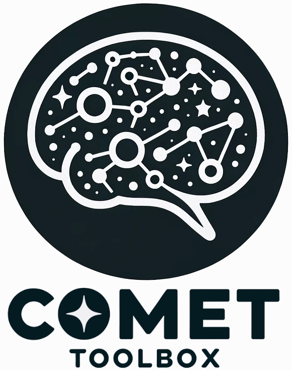

Comet - A dynamic functional connectivity toolbox for multiverse analysis
Important notes
This package is at an early stage of development, with frequent changes being made. If you intend to use this package at this stage, I kindly ask that you contact me via the email address in the pyproject.toml file.
Many features are not yet tested, so there will be bugs (the question is just how many). A comprehensive testing suite and documentation will be added in the near future.